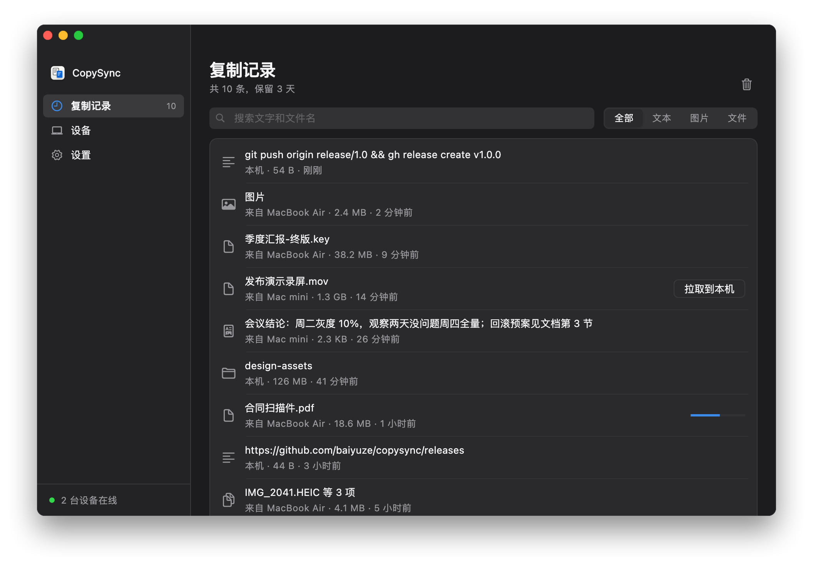

两台电脑之间复制粘贴，
为什么还这么麻烦？
发给自己
发过去，点开，下载，再找文件在哪
隔空投送
每次都要点接收，也进不了剪贴板
通用剪贴板
同一个 Apple ID，还得离得近
Mac 和 Windows 之间
系统自带的办法，一个都用不上
其实，可以简单得多。
隔空贴
在这台电脑复制，到那台电脑粘贴。
macOS · Windows · Linux
季度汇报-终版.pptx
⌘C
备忘录
会议结论：周二先发布 10%，
观察两天没问题，周四全量。
观察两天没问题，周四全量。
⌘V
屏幕截图.png
⌘C
季度汇报-终版.pptx
CtrlV
会议记录.txt - 记事本
会议结论：周二先发布 10%，
观察两天没问题，周四全量。
观察两天没问题，周四全量。
CtrlC
周报.docx - Word
CtrlV
直连，端到端加密
Mac 上复制文件，Windows 上直接粘贴
反过来也一样：Windows 复制，Mac 粘贴
截图、图片也是，粘贴出来就是图片
复制什么，粘贴出来就是什么
文字
带格式的文字
图片
文件
整个文件夹
小于 50 MB 的内容，复制时就开始传输；
更大的文件先同步记录，需要时再拉取。
所有设备复制过的，
都在这里
- 默认保留最近 3 天，可以调
- 点一下，放回剪贴板
- 图片点开就能预览
- 大文件，需要时再拉到本机

第一次用，配对一次就好
同一网络搜索附近设备，点一下对方就能配对
核对两边的安全指纹，一致再确认


同一网络不用服务器，跨网络也能用
同一网络
家里或办公室，
装好就能用，不需要服务器
公网服务器
自己部署，一台小云主机就够，
在哪儿都能同步
Tailscale
跨网络，
也不需要服务器
设备之间优先直连，端到端加密。
自建服务器模式下，直连失败时由你的服务器中转，内容仍然加密。
和常用的办法比一比
隔空贴通用剪贴板隔空投送聊天软件
不同 Apple ID 之间✓—要对方接收✓
不在同一个网络（家里和公司）✓——✓
复制后直接粘贴，不用点接收✓✓——
Mac 与 Windows 之间✓——✓
文件与整个文件夹✓不稳定✓要先打包
找回之前复制过的内容✓——翻聊天记录
内容不经过第三方服务器✓✓✓—
隔空贴
在这台电脑复制，到那台电脑粘贴。
免费开源macOS 13+Windows 10 / 11Linux x64 / ARM64
- 官网下载
- pasteferry.cc/
- 源代码
- github.com/baiyuze/pasteferry
少一步传来传去，多一点顺手。
一分钟多，了解隔空贴
无声演示 · macOS / Windows / Linux
影片要点
- Mac 上复制文件，Windows 上直接粘贴
- 反过来也一样：Windows 复制，Mac 粘贴
- 复制什么，粘贴出来就是什么
- 默认保留最近 3 天，可以调
- 第一次用，配对一次就好
- 设备之间优先直连，端到端加密。
- 自建服务器模式下，直连失败时由你的服务器中转，内容仍然加密。